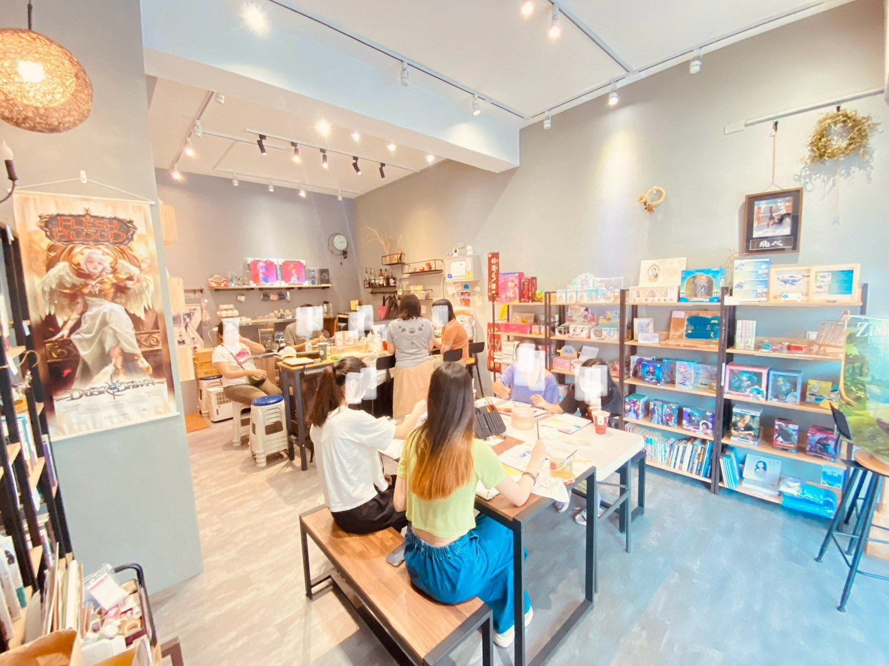
多元成員共同參與
在開放的學習空間中，不同成員各自進行討論、創作與交流，呈現自學團多元且彈性的活動樣貌。
本頁整理頌哲參與自學團聚會、團體討論、小組交流、個人準備與體驗活動的照片。這些紀錄呈現他如何在不同場域中聆聽他人、說明觀點、與同儕互動，並透過實際參與累積學習經驗。
自學團提供了不同於個人閱讀與觀看影片的學習情境。頌哲能在實際交流中聽見不同年齡、背景與立場的看法，也需要練習把自己的想法說清楚，回應他人的問題，並在討論後重新檢查原本的觀點。

在開放的學習空間中，不同成員各自進行討論、創作與交流，呈現自學團多元且彈性的活動樣貌。
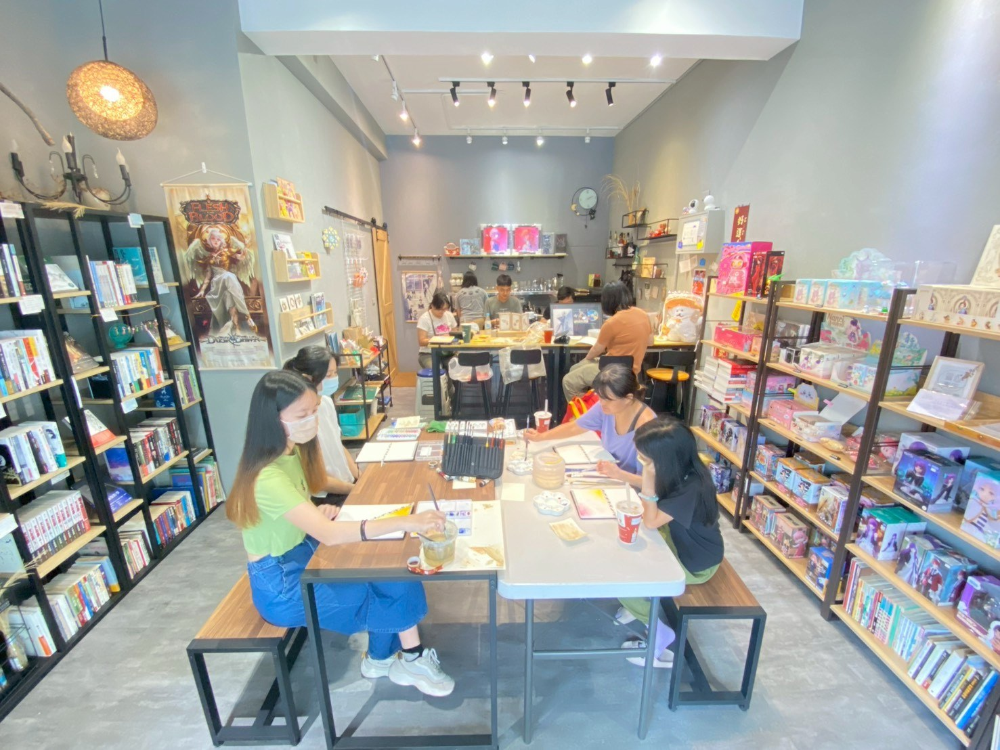
同一空間內可以同時進行個人工作、小組討論與生活互動，學習不只發生在單一形式的課堂中。
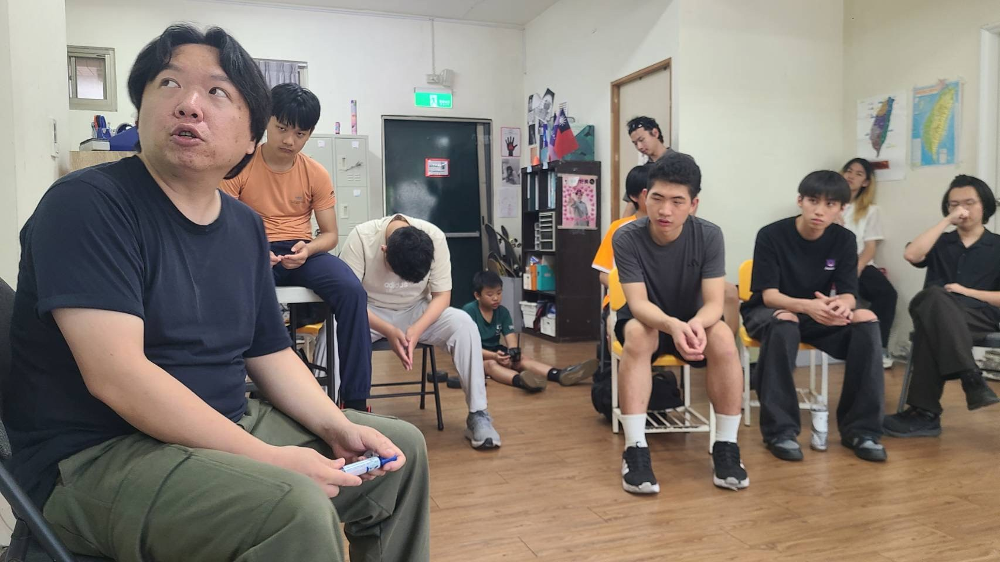
成員輪流說明想法，其他人透過聆聽、觀察與回應，理解不同人的經驗及立場。
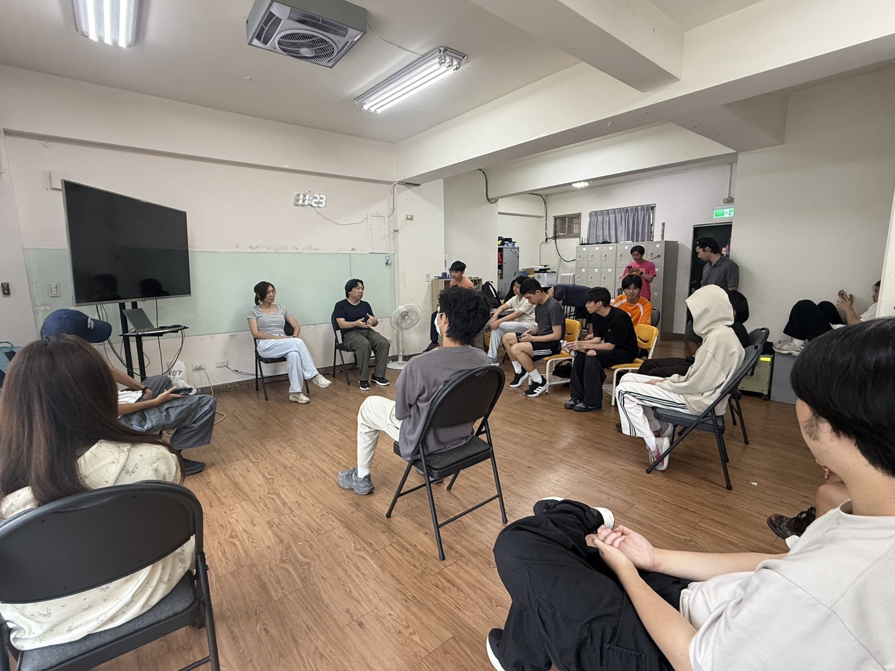
圓圈式座位讓成員彼此看見，也使發言、提問與回應更容易形成雙向交流。
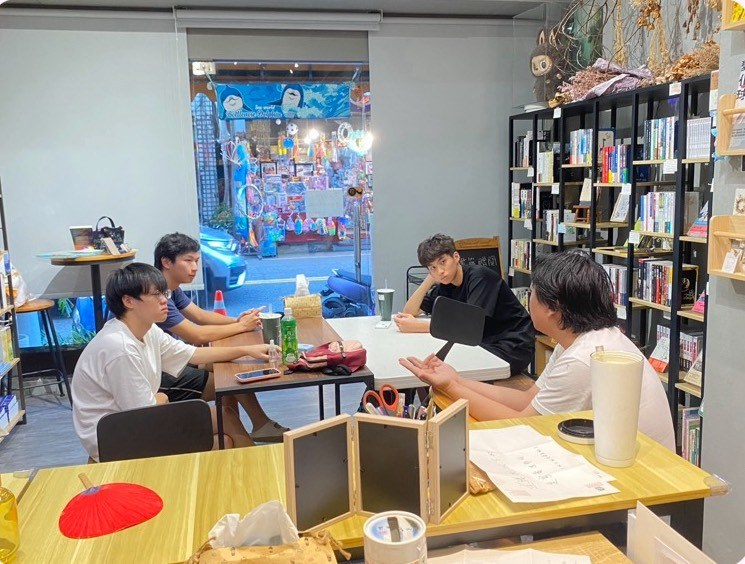
較小的討論形式讓每位成員有更多發言機會，也能針對問題持續追問與交換想法。
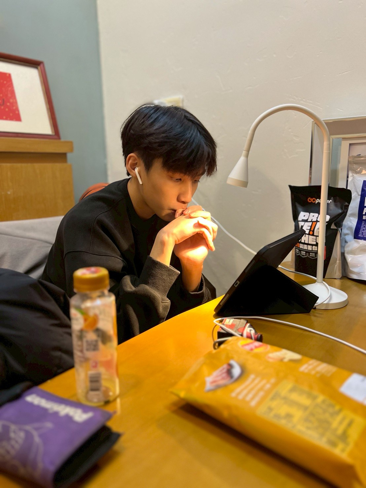
在團體活動之外，也保留個人閱讀、查找資料與整理思緒的時間，作為後續討論的準備。
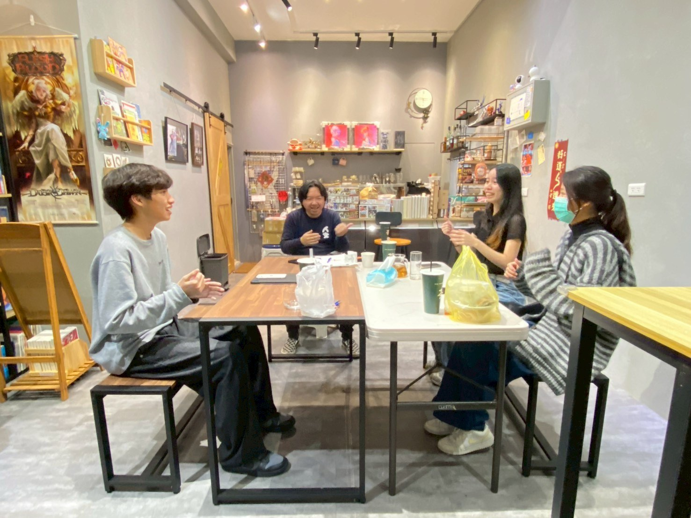
透過較輕鬆的交流情境，練習把想法說出來，也從他人的問題中重新理解自己的立場。
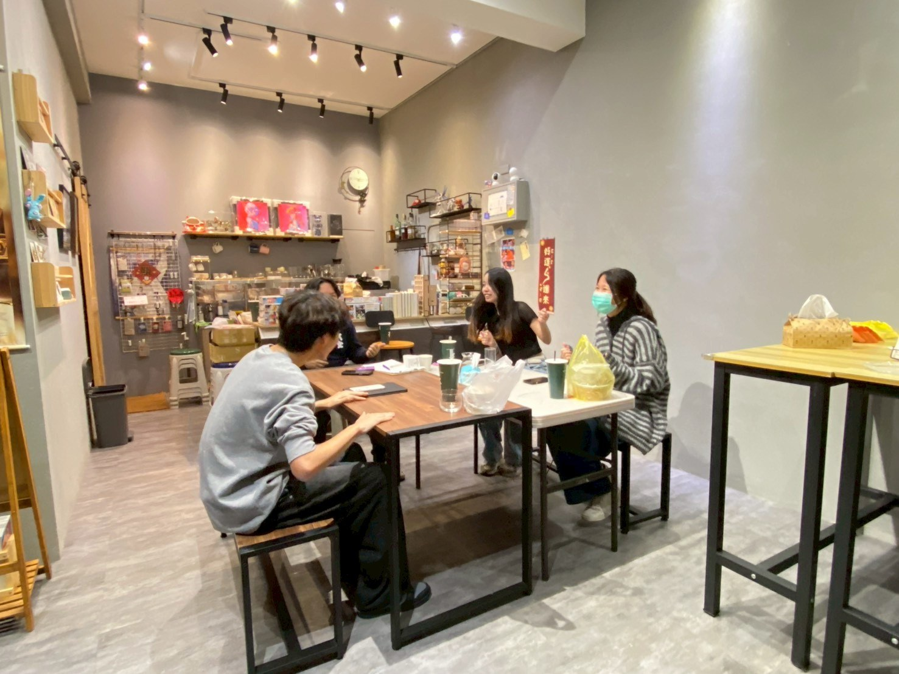
討論不只為了說服對方，也能幫助自己辨認原本沒有注意到的角度與盲點。
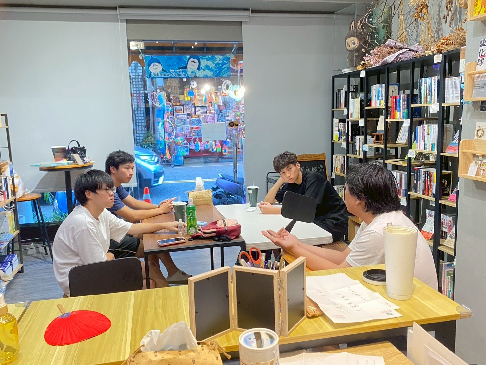
在熟悉的場域中持續討論，使抽象問題能透過例子、提問與回應逐漸變得清楚。
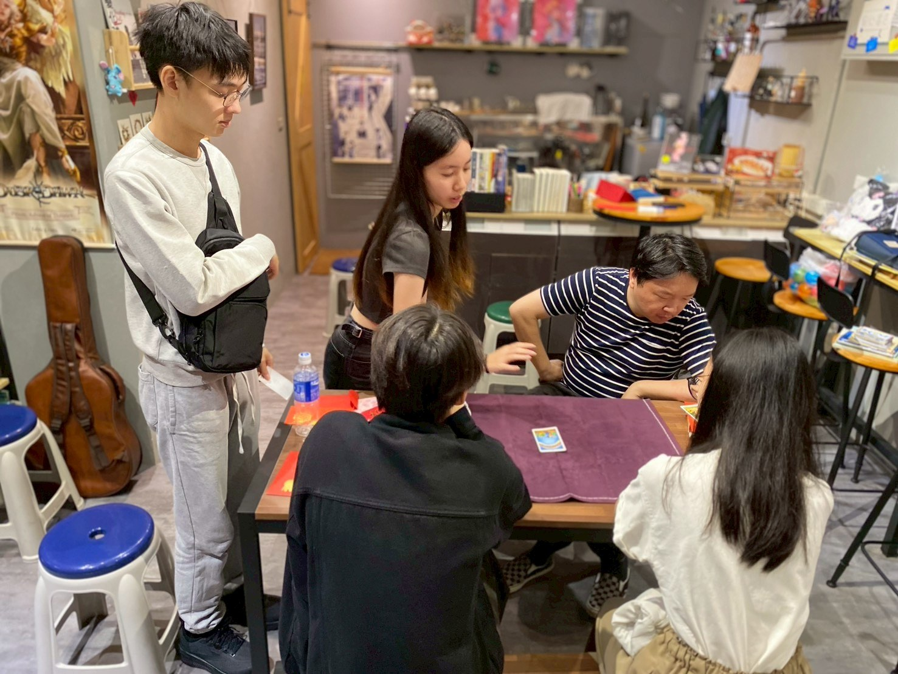
透過實際操作與觀察，成員在活動中練習規則理解、互動與即時回應。
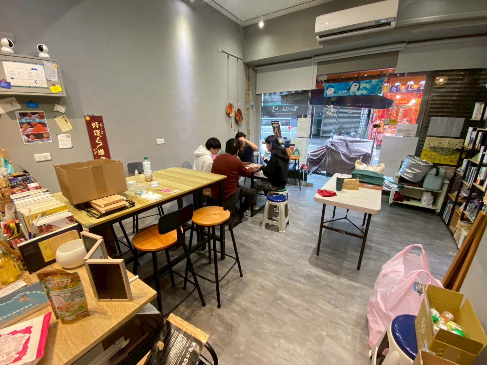
共同活動讓學習不只停留在文字與討論，也包含合作、等待、觀察與問題處理。
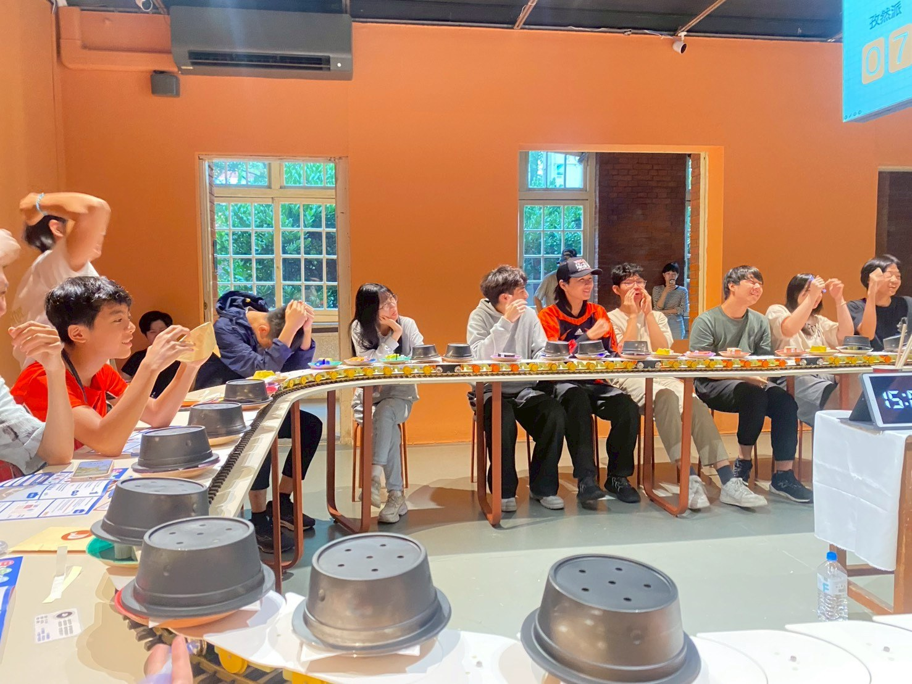
團體活動創造共同話題與經驗，也讓成員在正式討論之外建立互動與連結。
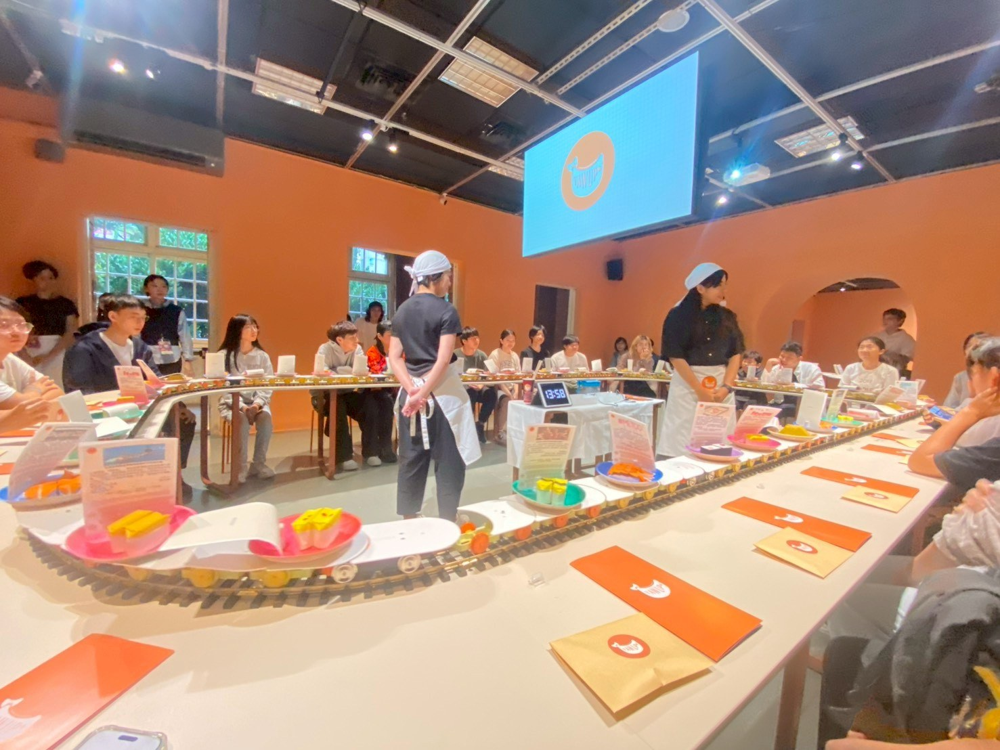
在較多人共同參與的情境中，需要注意流程、聽取說明並配合團體節奏。
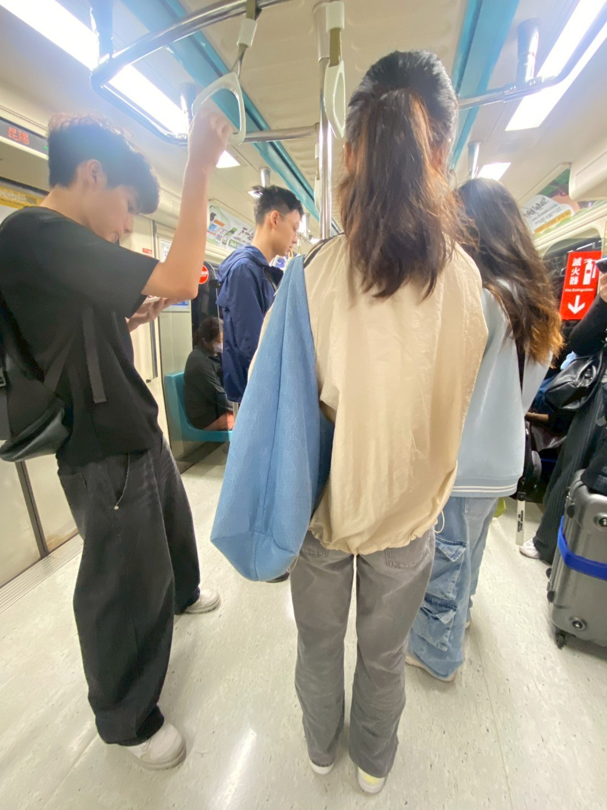
活動中的交通移動與行程安排，也是團體生活的一部分，包含時間、秩序與彼此照應。